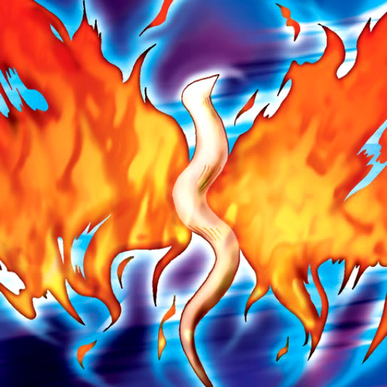

Wings of Wicked Flame

STATS
ATK: 700
DEF: 600DECK COST
Deck Cost per Card: 13Fusion List (28 Possible Fusions)
- Wings of Wicked Flame + Armed Ninja = Charubin the Fire Knight
- Wings of Wicked Flame + Beautiful Beast Trainer = Flame Swordsman
- Wings of Wicked Flame + Celtic Guardian = Flame Swordsman
- Wings of Wicked Flame + Crow Goblin = Crimson Sunbird
- Wings of Wicked Flame + Droll Bird = Crimson Sunbird
- Wings of Wicked Flame + Eyearmor = Crimson Sunbird
- Wings of Wicked Flame + Flower Wolf = Flame Cerebrus
- Wings of Wicked Flame + Garvas = Flame Cerebrus
- Wings of Wicked Flame + Griffore = Flame Cerebrus
- Wings of Wicked Flame + Hibikime = Flame Swordsman
- Wings of Wicked Flame + Hyo = Flame Swordsman
- Wings of Wicked Flame + Kagemusha of the Blue Flame = Charubin the Fire Knight
- Wings of Wicked Flame + Kurama = Mavelus
- Wings of Wicked Flame + M-Warrior #1 = Flame Swordsman
- Wings of Wicked Flame + M-Warrior #2 = Flame Swordsman
- Wings of Wicked Flame + Mavelus = Crimson Sunbird
- Wings of Wicked Flame + Monstrous Bird = Crimson Sunbird
- Wings of Wicked Flame + Moon Envoy = Flame Swordsman
- Wings of Wicked Flame + Mushroom Man #2 = Flame Swordsman
- Wings of Wicked Flame + Mystic Horseman = Flame Cerebrus
- Wings of Wicked Flame + Oscillo Hero = Flame Swordsman
- Wings of Wicked Flame + Princess of Tsurugi = Flame Swordsman
- Wings of Wicked Flame + Silver Fang = Flame Cerebrus
- Wings of Wicked Flame + Skull Red Bird = Crimson Sunbird
- Wings of Wicked Flame + Swordsman from a Foreign Land = Flame Swordsman
- Wings of Wicked Flame + Vishwar Randi = Flame Swordsman
- Wings of Wicked Flame + Wolf = Flame Cerebrus
- Wings of Wicked Flame + Wood Clown = Flame Swordsman